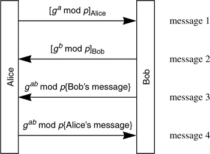

Networking Security Networking Security Networking Security Security Networking Security Networking Security Networking Charlie Kaufman Radia Perlman Mike Speciner Prentice Hall Network Security: Private Communication in a Public World, Second Edition Networking Security Networking Security Networking Security Security Networking Security Networking Security Networking Charlie Kaufman Radia Perlman Mike Speciner Prentice Hall Network Security: Private Communication in a Public World, Second Edition
16.8. Arranging for Parallel Computation
A lot of protocols require both Alice and Bob to compute a shared Diffie-Hellman key. This might take a long time (seconds perhaps, on slow devices). It can speed up the total elapsed time for an exchange if Alice and Bob can be computing at the same time, as in Protocol 16-7.

This exchange might seem silly. Why not combine message 2 with message 3? The reason is that telling Alice gb mod p gives Alice a head-start on computing gab. She can be computing gab at the same time Bob is computing it. Al Eldridge probably was the first to invent this trick of sending an extra message in order to allow the computation-intensive calculations to be done in parallel. He implemented it in Lotus Notes. In Lotus Notes, Bob sends something encrypted with Alice's public key in msg k, and then later sends his signature on that message in msg k + 1. This lets Alice do the expensive private key decryption while Bob is doing the expensive signature.
Notice that although this adds a message it doesn't add any round-trip times, so it can be faster even if Alice and Bob are very far apart, talking to each other via, say, carrier pigeons (see RFC 1149 or RFC 2549).
|